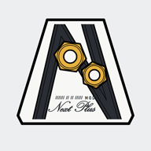
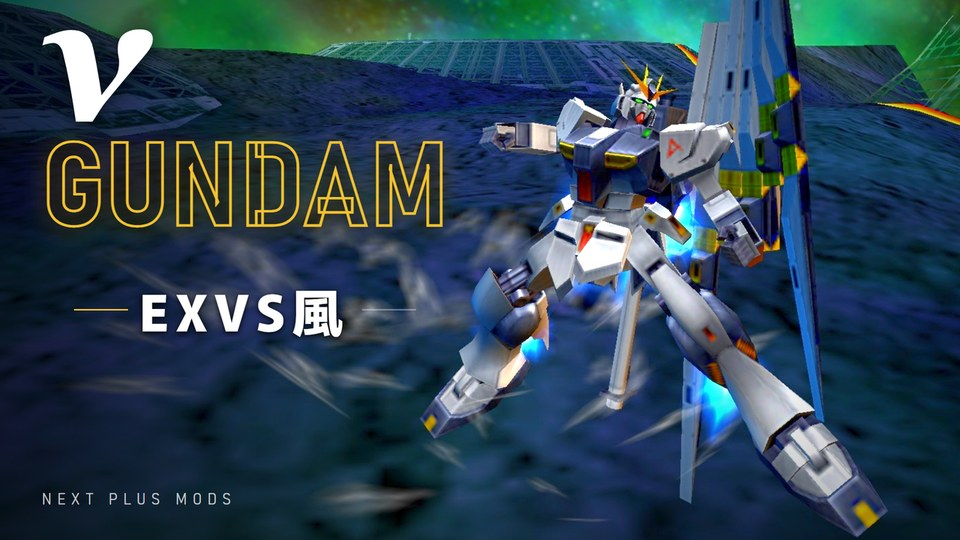
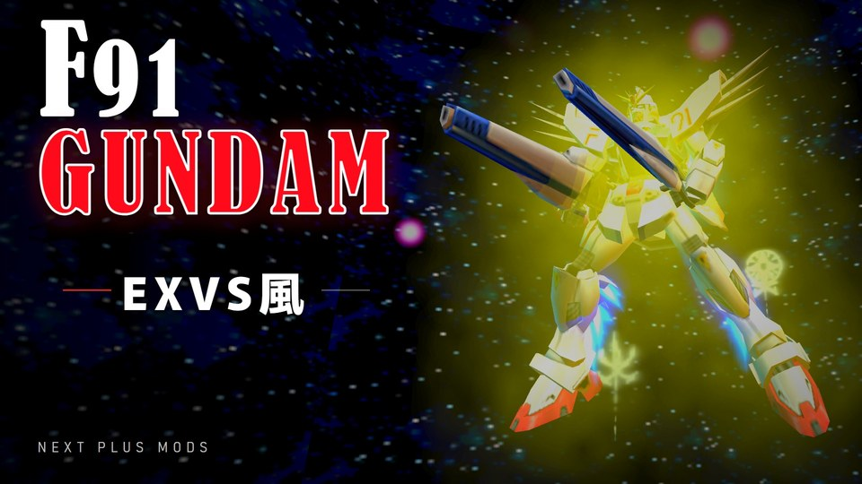
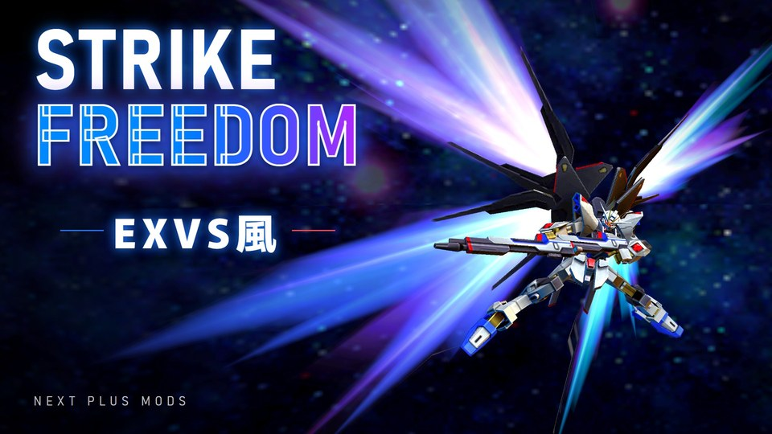
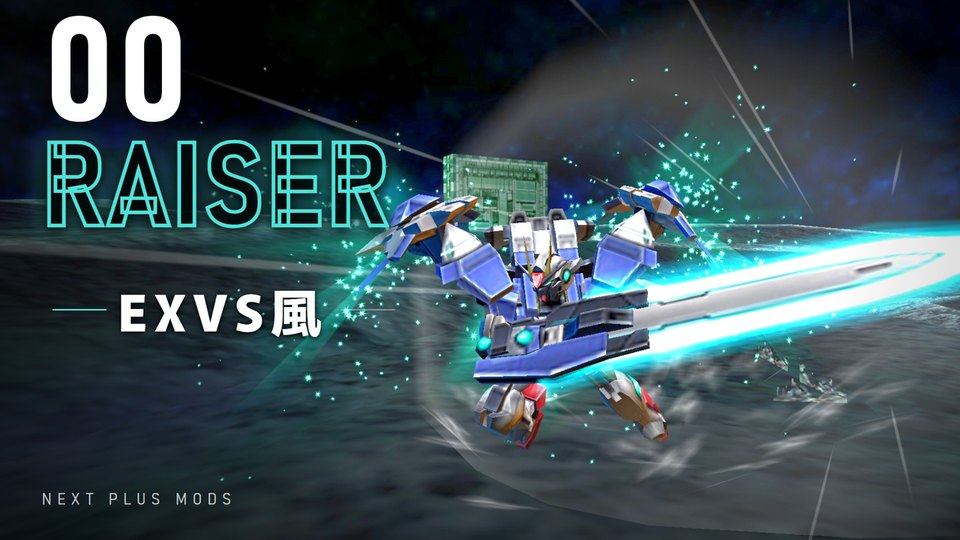
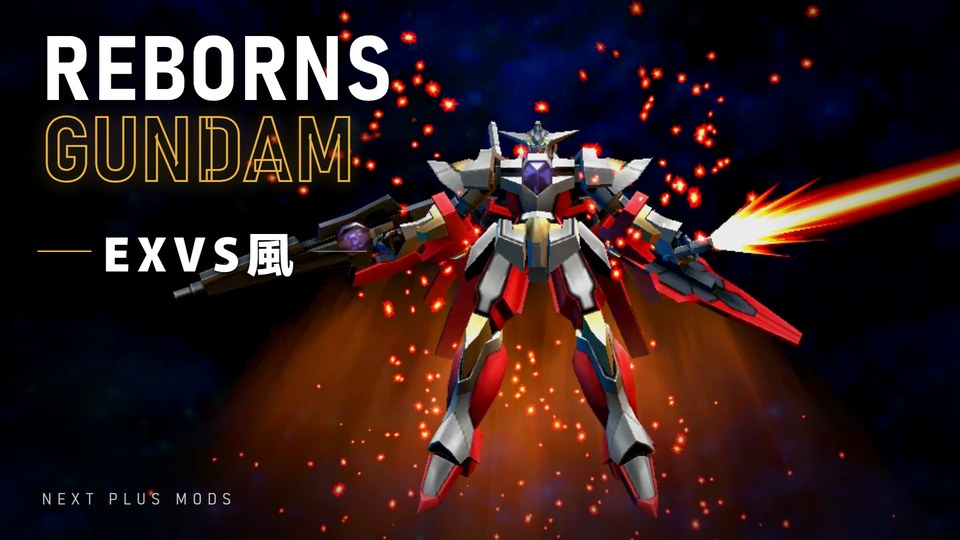

ガンダムVS.ガンダムNEXT PLUS（PSP）の改造コード





νガンダム・ガンダムF91・ストライクフリーダム・ダブルオーライザー・リボーンズガンダムを1つのファイルで使えます。チートは1Pで選んだ機体にだけ効きます
機体のコードを入れずに、EXVSシステムだけを使えます
機動戦士ガンダムF91
機動戦士ガンダムSEED DESTINY
機動戦士ガンダム00
機動戦士ガンダム00
最初にお読みください
下の 6つの手順を、上から順にすべて行ってください。1つでも飛ばすと、チートが効かない・動作が不安定になることがあります。うまくいかないときは、質問や不具合の報告の前に、このページ下の「動かないときのチェック」を上から確認してください
NPJH50107.ini を、PPSSPP の PSP/Cheats フォルダに入れる（フォルダがなければ作る。場所は下の「PSP/Cheats フォルダの場所」）出る技は機体ごとに違います。横覚醒技・後覚醒技がない機体もあります
ドキュメント\PPSSPP\PSP\CheatsPSP/CheatsNPJH50107.ini.txt などになっていませんか？（正しくは NPJH50107.ini）NPJH50107（日本版）ですか？ほかの版では動きませんPSP/Cheats に混ざっていませんか？ファイルは1つだけにしてくださいそれでも直らないときは、コメントに PPSSPP のバージョン・Windows か Android か・使ったファイル・どの場面でどうなったか を書いてください。それがあると原因を調べやすくなります
どのファイルも同じ名前です。PSP/Cheats に置けるのはどれか1つなので、全部の機体を使うときは「全機体統合版」を選んでください
CFW の入った PSP 実機で、EXVSシステムと5機体のチートを動かすためのプラグインです。PPSSPP では上の ini ファイルを使ってください
⚠ 処理落ちすることがあります。あらかじめご了承ください
seplugins フォルダを PSP のメモリースティックのいちばん上にコピーする（seplugins がすでにあれば、中身を足す）seplugins/game.txt に次の1行を足す（ファイルがなければ作る）ms0:/seplugins/exvsplug.prx 1ARK の場合は、かわりに
seplugins/PLUGINS.TXT に次の1行を足すNPJH50107, ms0:/seplugins/exvsplug.prx, on
game.txt の CWCheat の行の最後の 1 を 0 にして止めるseplugins/exvs に、動きの記録の小さいファイル（log.txt）を作ります80020148 などのエラーが出るときは、CFW をもう一度起動してから（ARK なら FasterARK、6.61 LME なら launcher）ゲームを起動してください。電源を完全に切ったあとに出ますseplugins/exvsplug.prx と seplugins/exvs/exvs.bin の場所と名前、game.txt（ARK なら PLUGINS.TXT）の行がまちがっていないか確かめてくださいNPJH50107（日本版）であることを確かめてください。ほかの版では動きません2026-11-07
2026-11-04
2026-11-03
2026-11-02
2026-10-31
80020148 のエラーで起動できないバグを修正しました。チートが効き始めるのは、ゲームの起動から約20秒後になりますPLUGINS.TXT）を、使い方に足しました2026-10-30
2026-10-26
2026-10-25
2026-10-24
2026-10-23
2026-10-22
2026-10-20
2026-10-17
2026-10-16
2026-10-15
2026-10-14
2026-10-09
2026-10-03